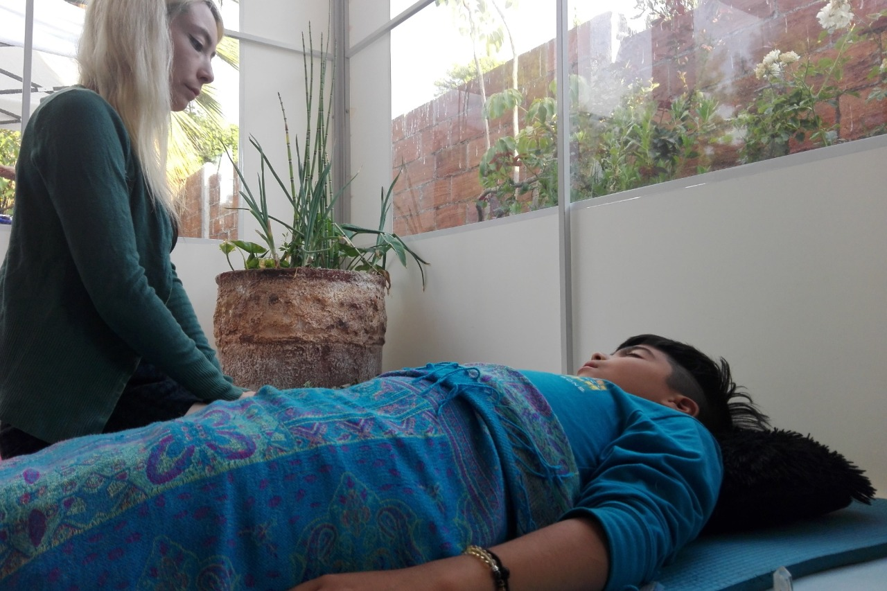

Adultos: ¿Quieres superar ansiedad, miedo o angustia? ¿O quieres atender tu
bienestar psicoemocional en otro aspecto? Pide tu hora (presencial u online).
Familiar:¿Te gustaría mejorar el bienestar psicoemocional de tu familia como tal? ¿O
las relaciones familiares? Pide tu hora (presencial u online).
Infanto-juvenil: ¿Tus hijos o nietos están con problemas que afectan su felicidad o su
bienestar? ¿O quieres asegurarte de aplicar las habilidades parentales adecuadas en su
formación? Pide tu hora (presencial u online).
Parejas:¿Ha sido especialmente desafiante tu relación de pareja el último tiempo? ¿O
tienen una relación sana pero desean potenciarla? Pide tu hora (presencial u online).
Separadas: ¿Estás en proceso de separación o ya te separaste? ¿Y necesitas apoyo
para abordar esta situación o tu vida de ahora en adelante? Pide tu hora (presencial u
online).

Medicina integrativa de adultos y niños: ¿Tú o alguien en tu familia tienes dolencias o
enfermedades? ¿Y prefieres un enfoque holístico, más allá de la medicina alópata o
tradicional? Pide tu hora (sólo online).
Kinesiología integral (con bioenergética y biomagnetismo): ¿Tú o alguien en tu familia
requieren apoyo kinesiológico? ¿Y les gustaría complementarlo con una visión integral,
que incluya bioenergética o biomagnetismo? Pide tu hora (presencial, online o a
domicilio).
Masoterapia integral:¿Tienes molestias, dolores o complicaciones posturales? ¿O
estás tensa o con distrés (estrés negativo)? ¿Y estás dispuesta a soltar o al menos
expresar emociones o creencias asociadas? Pide tu hora (sólo presencial).
Runas: ¿Tienes preguntas importantes que no has podido resolver? ¿O posibles
decisiones que te tienen estancada? ¿Crees en los oráculos divinos o en la voz de tu
propio corazón? Pide tu hora (presencial u online).
Tarot Terapéutico: ¿Quieres potenciar tu autoconocimiento? ¿O mejorar tu relación
con los demás o la vida? ¿Y crees que unas cartas te puedan dar luces para ver lo que
no estás viendo? Pide tu hora (presencial u online).
Alineación de chacras con Gyoshi Ho (reiki de la mirada), Reiki Tao y péndulo de
sanación: ¿Te has sentido cansada, con menos energía, o con algunos dolores
corporales o emocionales? ¿Quieres sentirte con mayor equilibrio físico, emocional y
energético? Pide tu hora (presencial u online).
Reiki del sonido: ¿Te gustaría sentirte mejor, relajada, equilibrada, con energía
renovada? ¿Quieres experimentar una forma de sanación energética que incluye
manos, voz y colores? Pide tu hora (sólo presencial).
Flores de Bach: ¿Tú o tus hijos están con problemas de comportamiento? ¿O sufren
alteraciones del ánimo, del sueño o estrés? Pide tu hora (presencial u online).
Felicidología ©: ¿Quieres ser más feliz de manera simple y efectiva? ¿Y estás dispuesta
de verdad a hacer ciertos cambios para eso? Pide tu hora (presencial u online).
Análisis de sueños: ¿Hay sueños que te están quitando el sueño? ¿O quieres entender
los mensajes de tu inconsciente para usarlos a tu favor? Pide tu hora (presencial u
online).
Limpieza de aura y chakras con Sanación Luz Dorada y péndulo de sanación: ¿Has
sentido molestias, bloqueos o cansancio en tu cuerpo físico o emocional? ¿Tienes la
sensación de que tiene que ver también con tu cuerpo en energético? Pide tu hora
(presencial u online).
Ho’oponopono vibracional: ¿Te sientes en conflicto, triste o molesta en tus relaciones
con algunas personas? ¿Estás percibiendo a algunas como tóxicas y no nutritivas? ¿Y
estás dispuesta a hacer tú misma un trabajo desde tu voz divina interior? Pide tu hora
(presencial u online).
Registros akáshicos: ¿Quieres entender mejor el camino de tu alma en esta vida y
relacionarlo con vidas pasadas? ¿Deseas recibir mensajes de los maestros de luz? Pide
tu hora (presencial u online).
Técnicas de liberación emocional (Tapping): ¿Quieres superar hábitos que te
complican? ¿O creencias o emociones que te están limitando? Pide tu hora (presencial
u online).
Biodescodificación emocional: ¿Te gustaría entender el origen metafísico de dolencias
o enfermedades? ¿Y mirar su significado emocional, para buscar a partir de allí la
forma de sanar? Pide tu hora (presencial u online).